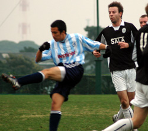
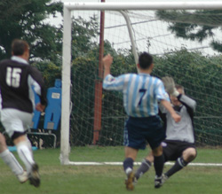

|
YC&AC Sun 6th November. Sala enjoyed another awayday in Yokohama on Sunday. Their 4th visit ended with their 3rd win and, the other game drawn, they remain the only opponent that YCAC hasn't beaten in TML action.
|  |
|
No Joy for the YCAC strikers as they were left to shoot from distance.
|
With a decent 14 man squad available and confidence high after dispatching a strong BFC side the week before, YCAC would surely make Sala wait at least 1 more week before recording their 1st win of the season. It looked that way at times, particularly during a YCAC purple patch leading up to HT but chances came and went and it was still all square at the half.
Outmatched physically in midfield and upfront it was obvious that the key to continuing their winning ways was for YCAC to keep the ball on the ground and moving. Easier said than done and, as well as Sala defended, their afternoon was made much too comfortable by the home teams 2H aerial bombardment. Anthony Savage, finally making his YCAC debut, looked the most likely to supply the killer pass but in the end was tied up by the capable Sala midfield.
It was again left to Damian Hart to supply the chief threat to the opposition goal from his free kicks. One crashed against the outside of the stanchion with SalaSid stranded on the opposite post. Sid then managed what the Knights' and BFC keepers hadn't and actually saved one from Damo, flinging himself to his right to paw a curler over the bar.
|  |
|
Joe Takeda fires his shot over the bar as he's closed down by keeper Sid.
|
With both Sid and Gary Hodgson looking unbeatable the game looked to be playing out to a goalless draw when a most unlikely goal decided things. A Sala defender punted the ball from his own half. Shot, hopeful pass forward, clearance, only he knows, but it was perfectly struck and sailed into Garys goal via the underside of the crossbar. It was probably the only way that he would be beaten but beaten he was and it ended his magnificent clean sheet from the start of the season at about 5 hours.
Still 10 minutes left and, pushing forward, YCAC continued to create enough chances to salvage something. A Jumpei cross shot eluded James Absoloms Gascoigne like lunge and Joe Takeda shot over by inches from the corner of the area. It wasn't to be though and Sala were able to celebrate a hard fought victory. YCAC were left only with the slightly perplexing consolation that no one had ever seemed so happy to beat them.
Report by Steve Taw.
|